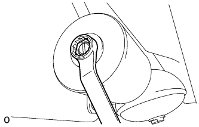
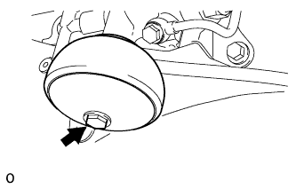
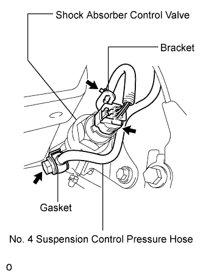
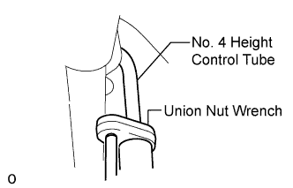
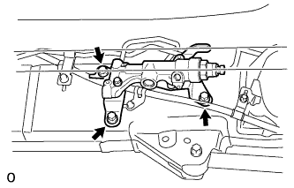
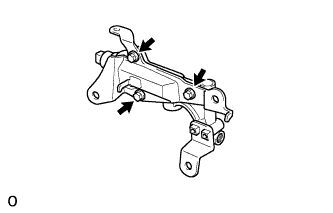

DAMPING FORCE CONTROL ACTUATOR (for Rear Side) > REMOVAL |
| 1. REMOVE SIDE STEP ASSEMBLY LH |
Remove the 6 bolts and side step.

| 2. REMOVE HEIGHT CONTROL UNIT PROTECTOR ASSEMBLY LH |
Remove the 6 bolts and protector pipe.

| 3. DISCHARGE SUSPENSION FLUID PRESSURE |
 |
Connect a hose to the bleeder plug for the shock absorber control valve and loosen the bleeder plug.
Discharge the suspension fluid pressure.
After the fluid pressure has dropped and oil has drained out, tighten the bleeder plug and remove the hose.
| 4. REMOVE REAR SUSPENSION CONTROL ACCUMULATOR ASSEMBLY LH |
 |
Remove the control accumulator from the control valve.
Remove the O-ring from the accumulator.
| 5. REMOVE REAR NO. 3 SUSPENSION CONTROL ACCUMULATOR LH |
 |
Remove the No. 3 control accumulator from the control valve.
Remove the O-ring and back-up ring from the control accumulator.
| 6. REMOVE REAR SHOCK ABSORBER CONTROL VALVE ASSEMBLY LH |
 |
Disconnect the control valve connector from the control valve.
Remove the union bolt and gasket from the No. 4 suspension control pressure hose.
Disconnect the wire harness clamp from the control valve bracket.
 |
Using a union nut wrench, disconnect the No. 4 height control tube from the control valve.
 |
Remove the 3 bolts and control valve with the bracket from the vehicle.
 |
Remove the 3 bolts and bracket from the control valve.
| 7. REMOVE REAR NO. 2 SUSPENSION CONTROL ACCUMULATOR BRACKET LH |
Remove the bolt and bracket from the shock absorber control valve.